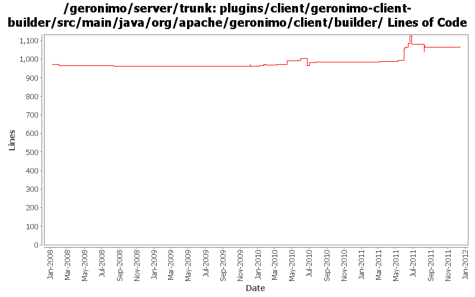

[root]/plugins/client/geronimo-client-builder/src/main/java/org/apache/geronimo/client/builder
 jsr88
(3 files, 145 lines)
jsr88
(3 files, 145 lines)

| Author | Changes | Lines of Code | Lines per Change |
|---|---|---|---|
| Totals | 47 (100.0%) | 586 (100.0%) | 12.4 |
| genspring | 9 (19.1%) | 196 (33.4%) | 21.7 |
| djencks | 19 (40.4%) | 172 (29.4%) | 9.0 |
| xuhaihong | 7 (14.9%) | 154 (26.3%) | 22.0 |
| gawor | 8 (17.0%) | 56 (9.6%) | 7.0 |
| jdillon | 2 (4.3%) | 4 (0.7%) | 2.0 |
| xiaming | 1 (2.1%) | 3 (0.5%) | 3.0 |
| kevan | 1 (2.1%) | 1 (0.2%) | 1.0 |
GERONIMO-6230 Ensure the temp jar file exists before new NestedJarFile to avoid FileNotFoundException
3 lines of code changed in 1 file:
GERONIMO-6106 Clean up temp files created in the deployment process
Use a thread local in the FileUtils to hold all the temp files in the deployment process
0 lines of code changed in 1 file:
GERONIMO-6106 Clean up temp files created in the deployment process
a. Start the reaper thread on the server start up, it will clean up the temp files generated by FileUtils in the last run
b. Keep a temp file list in the DeploymentContext, and will be deleted after the deployment finished
50 lines of code changed in 1 file:
No function changes, format the codes for next step changes.
75 lines of code changed in 1 file:
GERONIMO-5066 Use naming Reference to set up Datasources and use them to get global scope datasources from server to app client
21 lines of code changed in 1 file:
GERONIMO-6018 Geronimo does not support @ManagedBean defined in app client module.
1, added a openejb-client module to only contain openejb system and managed container.
2, add a ClientEJBBuiler so that client-deployer could use it to build @ManagedBean in app client module.
3, updated EJBModuleBuilder and AppClientModuleBuilder to do the ejb in clientmodule deployment work.
34 lines of code changed in 1 file:
GERONIMO-6016 Geronimo can't handle well when modules in ear has the same name.
12 lines of code changed in 1 file:
GERONIMO-6008 use openejb remote jndi system in client container to do global jndi lookup.
see OPENEJB-1596 for openejb side changes.
26 lines of code changed in 1 file:
re-enable the message-destination handling logic for spec and vendor DD.
5 lines of code changed in 1 file:
When the module is standalone (without parent module), The jar was not added to appClientDeploymentContext bundle classpath.
7 lines of code changed in 1 file:
1, Copy the non module files before caculating manefest classpath because we need to support direcory classpath.
2, Add manifest classpath caculation logic for lib/*.jar .
2 lines of code changed in 1 file:
EJB31 spec EE.8.2.1 :
A JAR format file (such as a .jar file, .war file, or .rar file) may reference a
.jar file or directory by naming the referenced .jar file or directory in a
Class-Path header in the referencing JAR file’s Manifest file
95 lines of code changed in 1 file:
LifecycleMethodBuilder.buildNaming() need the applicatoin client main class info in specDD.
6 lines of code changed in 1 file:
GERONIMO-5849 Application client can't be undeployed clearly. -- use a temp dir to hold the temp datas when deploying the appclient module.
9 lines of code changed in 1 file:
XBEAN-162 update to genericed xbean-finder apis
1 lines of code changed in 1 file:
regression - make sure app jndi namespace is properly shared for standalone modules
4 lines of code changed in 1 file:
GERONIMO-5025 include the app and global contexts in the app client jndi tree. This causes big problems if one of these is a resource-ref or similarly references something only configured on the server
15 lines of code changed in 1 file:
GERONIMO-5408. Attach classpaths to modules, and combine them into the DeploymentContext bundle-classpath
4 lines of code changed in 1 file:
cf openejb rev 958340. marshal persistence.xml in the correct namespace, marshal methods names changed
1 lines of code changed in 1 file:
GERONIMO-5190 use openejb-jee jaxb tree for spec dds
35 lines of code changed in 1 file:
GERONIMO-5025, GERONIMO-5117. Make jndi supported directly by Modules and straighten out which contexts are shared when.
46 lines of code changed in 1 file:
fix compilation error introduced by rev 948268
1 lines of code changed in 1 file:
return null if there is no manifest so other config builders can deploy the module
3 lines of code changed in 1 file:
GERONIMO-5025 support for jndi configuration in application.xml (part 2)
1 lines of code changed in 1 file:
GERONIMO-5253: Bind module name into JNDI (java:module/ModuleName). Also, some app client fixes
12 lines of code changed in 1 file:
GERONIMO-5253: Publish application name to JNDI (java:app/AppName)
11 lines of code changed in 1 file:
Miss one line code in the last commit
1 lines of code changed in 1 file:
More update for using generic key in EARContext
1 lines of code changed in 1 file:
GERONIMO-5150 type safe shared data in EARContext
5 lines of code changed in 1 file:
GERONIMO-5190, GERONIMO-4360. Make jaxb dd objects fit into deployment system a little bit, and add some incomplete connector annotation support
2 lines of code changed in 1 file:
GERONIMO-4934 make app client container work under osgi
11 lines of code changed in 1 file:
GERONIMO-5057 Use those xmlbeans generated by JAVA EE 6 schema files
18 lines of code changed in 1 file:
GERONIMO-4934 set the bundle context in the app clients EarContext
4 lines of code changed in 1 file:
GERONIMO-5030: Initial refactoring of some of the module deployment code to support deployment of Bundles. Also, implemented rfc66 extender that can actually deploy WABs with simple servlets and jsps.
4 lines of code changed in 1 file:
GERONIMO-5025 Initial work on ee 6 scoped jndi stuff. Minimal testing so far
4 lines of code changed in 1 file:
GERONIMO-5008 Create util methods for all the Geronimo components
9 lines of code changed in 1 file:
revert r887507 - will take a different route
0 lines of code changed in 1 file:
GERONIMO-4975: Simplify integrating new ModuleBuilders with EARConfigBuilder
8 lines of code changed in 1 file:
build client module
14 lines of code changed in 1 file:
GERONIMO-4531, GERONIMO-4523 Simplify builder collections. Make security principal-role mappings independent of the application
18 lines of code changed in 1 file:
(6 more)